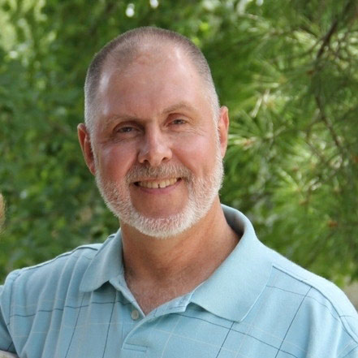
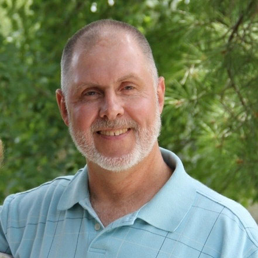

Sponsors
Ambassadors Fellowship
P. O. Box 62309, Colorado Springs, CO 80962
Virgil Amos, virgilamos@aol.com
719-332-0435
Operation Mobilization
285 Lynnwood Avenue, Tyrone, GA 30290
Terre Haas, Church Connections Team, terre.haas@om.org
770-692-5173
Perspectives on the World Christian Movement
1605 East Elizabeth Street, Pasadena, CA 91104
Monica Mitchell, Regional Director, monica.mitchell@perspectives.org
240-888-4834
SIM USA
14830 Choate Circle, Charlotte, NC 28273
Lydia Mims, Director of HR, lydia.mims@sim.org
704-587-1418
 
